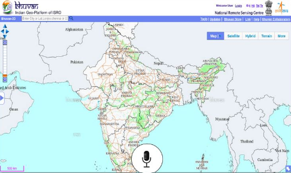

GeoSpeak

GeoSpeak is an innovative voice-based navigation system developed for ISRO's Bhuvan portal. The project's core objective was to enhance accessibility and usability by enabling users to interact with the Bhuvan portal through natural language voice commands. Emphasizing multilingual support, the system was designed to understand commands in both English and Hindi, accommodating various Indian accents for a seamless user experience.
- Voice-Based Navigation: GeoSpeak revolutionizes navigation within the Bhuvan portal by introducing a voice-driven interaction model. Users can effortlessly explore geographic data and execute commands using intuitive voice inputs, reducing the dependency on traditional input methods.
- Multilingual Command Support: Recognizing the linguistic diversity of users, the system supports both English and Hindi commands. This inclusivity ensures that users can interact with GeoSpeak using their preferred language, promoting a more inclusive and user-friendly experience.
- Custom Dataset Creation: Faced with the challenge of a lack of open-source Hindi or Hinglish datasets, the team demonstrated resourcefulness by creating a custom dataset. Engaging friends and family members, they gathered voice recordings encompassing various intonations for essential commands like Up, Down, Left, and Right. This unique dataset became the foundation for training the voice recognition model, highlighting the team's dedication to overcoming obstacles.
NodeJS
Parcel
Python
HTML5
CSS3
Behind the Scenes of the Project
The development process involved not only technological prowess but also a proactive approach to dataset creation. The team's inability to find a suitable open-source Hindi dataset led them to tap into personal networks, illustrating their commitment to delivering a high-quality solution. This behind-the-scenes effort showcases the team's adaptability and determination to address challenges creatively. GeoSpeak stands as a testament to the intersection of advanced technology, linguistic inclusivity, and user-centric design, contributing to a more accessible and user-friendly Bhuvan portal experience.